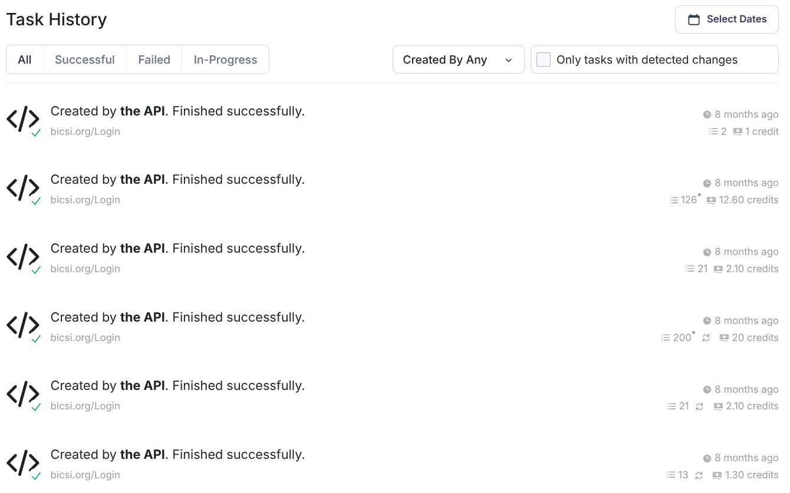
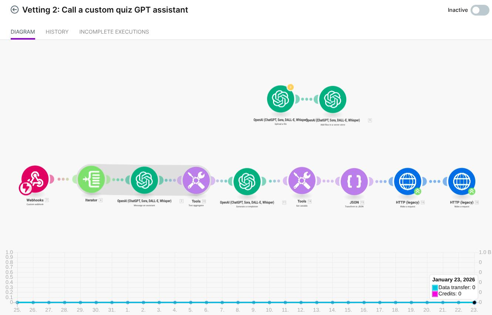

Candidate Intake & Parsing Layer

Interactive quiz bot conducting role-specific technical assessment with candidate responses
Implemented an intelligent ingestion system that processes application forms with inconsistent
data quality and formats them into structured, analysis-ready profiles.
Input Sources:
Application forms, role preferences, tech stack, experience level, domain expertise
Normalization:
Field cleaning, consistent naming, role mapping, scoring-ready attributes
Output:
Structured candidate profile JSON with validation and completeness scoring
Adaptive Skill-Check Bot

Interactive quiz bot conducting role-specific technical assessment with candidate responses
Developed a custom quiz assistant that generates role-specific technical assessments using
a structured evaluation rubric tailored to each position's requirements. The bot conducts
conversational interviews, asking candidates questions across multiple technical domains and
tracking their responses in real-time.
Question Generation:
LLM-powered, role-based sections (support, networking, automation, scripting, infrastructure)
Quiz Format:
Multiple-choice for consistent scoring, sequential flow with progress tracking
Adaptability:
Questions adapt based on candidate's experience level and role requirements
Delivery:
Conversational interface with real-time validation and automatic result collection
LLM Evaluation & Matching Engine
Built a sophisticated scoring layer that analyzes candidate applications, enriches profiles with
extracted signals, and produces actionable match scores against vacancy requirements.
Analysis Signals:
Seniority indicators, tool familiarity, skill gaps, domain experience
Structured Outputs:
Strengths, risks, missing skills, suggested interview track
Recommendations:
Reject / short interview / technical interview / direct hire recommendation
Track Routing:
Support, automation, infrastructure, field ops, etc.
Open-Source Data Enrichment
Automated enrichment pipeline that validates and enhances candidate profiles using publicly
available professional data sources.
Enrichment Sources:
Professional profiles, technology history, consistency validation
Validation:
Cross-reference application claims with public professional history
Integration:
Merged back into candidate profile to improve matching accuracy
System Execution & Monitoring

API execution task history showing successful quiz vetting completions with credit tracking and performance metrics
Implemented comprehensive monitoring and logging infrastructure to track system performance,
execution success rates, and resource utilization across all automation workflows.
Task Tracking:
Real-time execution monitoring with status indicators (successful, failed, in-progress)
Resource Management:
Credit-based API usage tracking with detailed consumption metrics per execution
Performance Analytics:
Historical execution data, completion times, success rates, and trend analysis
Reliability:
Automated retry mechanisms and failure alerting for operational stability
Automation & Orchestration
Designed the entire system as a modular, repeatable workflow with comprehensive error handling
and HR-optimized outputs.
Workflow Steps:
Parse form → enrich → quiz generation → quiz run → scoring → HR recommendations
Reliability:
Retry logic, failure handling, graceful degradation for incomplete data
Outputs:
HR-friendly reports, scorecards, interview recommendations, candidate summaries
RPA-Based Candidate Sourcing & Outreach
Implemented automated candidate search and personalized outreach that significantly expanded
the talent pipeline beyond passive applications.
Search Automation:
RPA workflows across professional networks with smart filtering
Personalization:
Tailored outreach based on role requirements + candidate background
Performance Tracking:
Logging, conversion metrics, response rate monitoring
Impact:
Generic messaging eliminated, response rates significantly improved